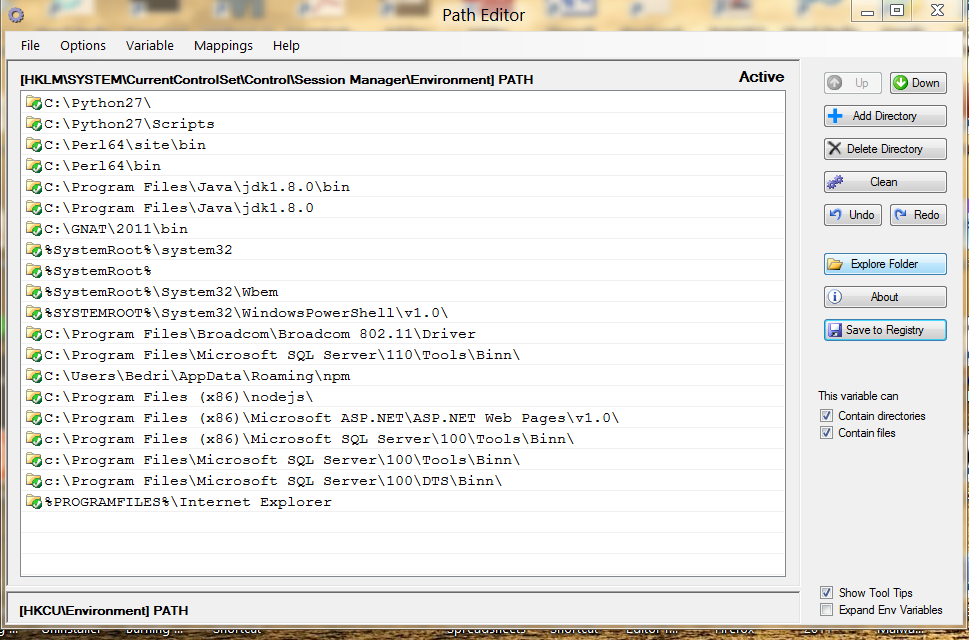

1.3 - Getting the Java Functionality
1.3.1 - Implementing Java Virtual Machine (JVM)
For any operating system to be Java aware, a JVM must be implemented to the system. Fortunately this is a very simple process. For any major operating system there is one suitable JVM at http://www.oracle.com/technetwork/java/javase/downloads/index.html. JVM comes with two flavors, the first JRE (Java Runtime Environment) is rather a subset of JDK for only compiling and running Java programs. The second is more a complete set including also JRE. Therefore, it is strongly advisable to download the latest JDK available from the download site which is JDK 7u4 platform for today choose the one suitable for you and implement it by running the executable file supplied within. That is all folks and your system has gained a Java functionality. For the ones which love a little adventure, we can also implement the prerelease version of Java 8 as it is defined in section 1.2.9 . There is no harm to implement it since it is not Java 8, actually it is Java 7u4 with some minor bugfixes. Anyway, choice is yours but do not implement anything before Java7, we will need his functionality. You may want also browse online Java Se 7 API and the documentation of Java 7 . These two information sources are of outstanding importance in Java program development.
Oracle has now an official web facility to test wheather the Java functionality has been properly installed in the system.
Once the Java is functional, we can begin running Java programs locally.
After the installation of Java 7, it is also a good idea to include java executables to your system path. With that, we can access java executables from every folder of our operating system. This is also a straightforward process and there is several ways to accomplish this. One way is to install a freeware program patheditor to your system. When you run patheditor, a dialog window will be opened as follows:

image 1.2.1-1-Path Editor
With the button "Add Directory" add your installation folder and you insatallation folder\bin to the system path. In the picture you may see the system path after including my installation folder to my system path. You should also have your path files after including your insatllation folders in your sistem path. Press the button "Save to Registry" and you are done yor installation folders are in your system path. Let us try. Open a system command window from any folder of your operating system and type successively javac , java and java -version to the command prompt. If your system understands and anwers to these commands, you have done. If not, a system restart may help. Otherwise try more conventional ways. Your system path must include your java installation folders.
1.3.2 - Compiling and Running Java Source Codes
Java environment is closely related with the file structure of the operating system. Java program codes which are conventionally defined as the "Java source codes" are simple text files and may be written with any convenient text editor. Each java source file can contain only one executable class whose name must be case sensitevely identique to the source code file with extension java as the FirstProgram.java example. JAVA IS A CASE SENSİTİVE PROGRAMMİNG LANGUAGE. Everything you call must conform case sensitively to the element you have defined.
To produce an executable Java program, we should open a command window
in the folder where FirstProgram.java is stored and invoke from there
the Java compiler included in the Java Virtual Machine. Compilation is
realised by typing
javac ProgramName.java
as in our example,
javac FirstProgram.java
Java compiler compiles the code and if all went as it should be, a file
with the ProgramName.class is generated like FirstProgramj.class. Java
class files are the java source codes compiled to Java bytecodes. Java
bytecode files are portable Java executable files. Coming to
portability, there is much restrictions to conclude the portability as
a city legend. An alien system is something unknown for the one who
sent Java executable bytecodes to be interpreted and run in antoher
system. First of all, compiler and interpreter JVM's must be in
accordance, you can not interpret the bytecodes containing Java 7
specific language features with a JVM from older releases. But, if the
codes are so arranged to be backward compatible, it dependes on how
much back dates the interpreter. Generally, backward compatible codes
compiled by a Java 7 compiler may be interpreted even from a Java 5
interpreter without hassle. But it depends on many factors of course.
Java source codes, compiled to Java bytecodes are interpreted and
executed by typing to the command line
java ProgramName
just like in the
java FirstProgram
if there is no run-time errors, the program will be interpreted and
executed. The result of the execution will be displayed in the command
window.
1.4 - Java Ecosystem
1.4.1 - Java Packages and Java Classes
Every Java class file must be in an explicitly stated package folder in the first line of the program. Packages are simple folders of the operating system. The pakage name must correspond to the package name case sensitively. Package declarations are made using the keyword package just like the shown below:
package preliminary;
The semicolon after the package declaration is compulsory, since in Java all statements terminate with a semicolon. This statement indicate that the Java class file should be stored in a folder who's name is preliminary.
Java source files may be put anywhere in the operating system and it will be wise to store Java source files in a folder different from the Java class files. But, Java class files must reside in folder declared in the package declaration.
Sometimes, we can omit the package declaration. Java comipler consider these being in the default folder. The default folder, is considered as the actual folder where actually the java source file lies. Java compiler will compile and Java interpreter will interpret and run these class files and nobody will see where actually this class file is stored. It will run from any folder in any system but it is a sloppy kind program organisation. We make this only in the first demonstration examples. In the real world all Java class files are assembled in the declared package folders.
A Java class in a default package has a simple structure shown below:
public class FirstProgram{ /* class properties ( if exists any) */ /* class methods ( if exists any) */ }
A class is an agglomeration of defined Java data types which are called properties or class members or class fields by analogy to the database programming. Methods are functions operating on that data. It is said that a class encapsulate properties and methoda. Properties may be simple data types like integers or real types, but sometimes they may even be other class types and this may give potential for bigger class with unlimited sizes. Fortunately, this is not common in practice, but some classes whith configuration up the five level deep may be encountered.
Methods are functions within a class. Java has not stand alone global functions like Pascal but all the fuctions are encapsulated within a class and named as methods. Lambda's which are in reality robust interchangeable global functions will be included in Java 8 but the mechanism of calling lambda's is not clear for the present.
A class may contain only properties, only methods or both as the general practice. Even both of the properties and methods may not exist and this is called an empty class. But there might not be much point to declare an empty class.
A class may be considered as a new data type composed from the defined data types, just like Pascal records. But, in addition to the Pascal's records, Java classes may also contain methods for manipulating class properties.
Classes are convenient ways to assemble and distribute data. Once class structure is defined, new instances of this class may be defined. An instance of the class is a new data type with the structure of the class, but in every new instance of the class, values of the properties may be different. This gives an endless opportunity for data organization. With class definitions, we can define our own data type and with instantiation, we can produce as much data of this data type as it is needed.
A new instance of the class may declared as follows:
ClassName InstanceName = new ClassName();
Just like as the example,
FirstProgram Horizons = new FirstProgram();
Only non-static members can be reassigned through instantaniation. The properties and methods declared with the keyword static, belong to the class definition and not related to the classes instances.
A class within a paclage and properties including methods of the new class instances, static members including static methods of class definition, can be accessed by using the dot operator. For example,
carlist.Toyota.model
There no simple way to differentiate in the above, which one is a package, which one them is a class name or property name. Rememeber that the term property is used sometimes as to include methods also. We can make some assumptions based on case sensitivity. Here carlist may be a package because package names begin with lovercase letter, Toyota is the name of the Toyota class, because class names begin with an uppercase letter. Lastly, model should be a field name of the Toyota class since since field names begin with a lowercase letter by convention.These are only suggestions of course and they must be justified, it is possible that the naming of the elements may not conform with Java coding conventions, but this is rarely the case. Naming elements, not conforming to Java code conventions is a coding style that should be stricly avoided. Otherwise, there will be no way to understand who is who.
When declaring a class, we can specify how the class members are accessed. This is accomplished by specifying an access modifier like public, private, protected in front of their declaration. Generaly, all the class members are declared as private due to the reasons of encapsulation, i.e. data safety. Java is wonderful with his capability of data safety and we should use it throughly in our programs.
When a data field is specified as private, only the default values are transmited through instantatination. The values of private fiels may not be altered by a direct assignment and special methods named getters and setters should be applied for getting and setting values for private fields. These are very simple of course and we will have the opportunities to work with them very soon.
The access of the class itself may be defined by the access modifiers. Here we have the liberty of setting the restrictions according our needs. For any class more accessibiliy normally is better. In the begining we will specify the access of our classes as public, this means that this class may be accessed from everywhere in the operating system. The other choices will be presented in the Object Oriented Programming section. Here we are introcing basic concepts for getting the ability of devising stand- alone Java programs. This in turn means, producing compiled bytecode files with extension class.
Polyglott HTML5(XHTML5 compliant HTML5 code)